2,903점
2,903점 진짜 유물
진짜 유물 뜻까지
뜻까지 물건까지
물건까지 나의 박물관
나의 박물관
여섯 판을 깨면 진짜 박물관 유물이 보따리째 들어옵니다. 유물마다 뜻이 있고, 그 뜻대로 오늘 쓸 물건이 됩니다.
첫 판 시작 ▶ 왜?공부부터 시키면 도망가지만, 놀다가 받은 보물은 스스로 열어 보니까요.2,903점진짜 유물뜻까지물건까지나의 박물관
여럿이 한 몸처럼 움직이던 대형을 직접 짜 보며, 함께 맞추는 힘을 익혀요.
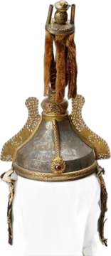
복숭아 모양 연적조선 · 국립중앙박물관서왕모의 천도복숭아처럼 오래 살기(불로장생)를 뜻해요.
오늘의 물건한 방울 디퓨저 — 어른 생신·장수를 축하할 때
출처 · 문화포털 전통문양 「복숭아문」 기린무늬 암막새통일신라 · 국립중앙박물관
기린무늬 암막새통일신라 · 국립중앙박물관사령의 하나. 재주 뛰어난 아이를 ‘기린아’라 부를 만큼 뛰어남과 태평성대를 뜻해요.
오늘의 물건펜 트레이 — 합격·승진을 축하할 때
출처 · 한국민족문화대백과 「기린」 파도 물고기무늬 완고려 · 국립중앙박물관
파도 물고기무늬 완고려 · 국립중앙박물관넉넉함과 다산을, 짝을 이루면 부부의 화합을 뜻해요.
오늘의 물건찻사발 — 결혼하는 두 사람에게
출처 · 문화포털 전통문양 「물고기문」도깨비얼굴무늬 기와고려 · 국립중앙박물관재앙과 나쁜 기운을 막고 지키는 벽사의 무늬예요.
오늘의 물건타일 코스터 — 새집으로 이사한 사람에게
출처 · 문화포털 전통문양 「귀신문」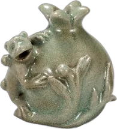

사진은 국립중앙박물관이 공개한 3D 스캔을 실제 재질·조명 속에 놓은 시제품 렌더예요. 키링처럼 모양만 오리지 않고, 원래 쓰임(구멍 둘·조금씩 내보내기)을 그대로 이어받았어요.


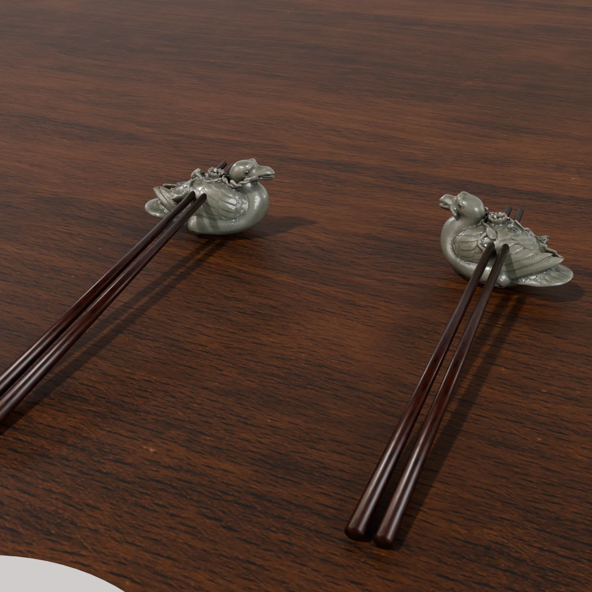


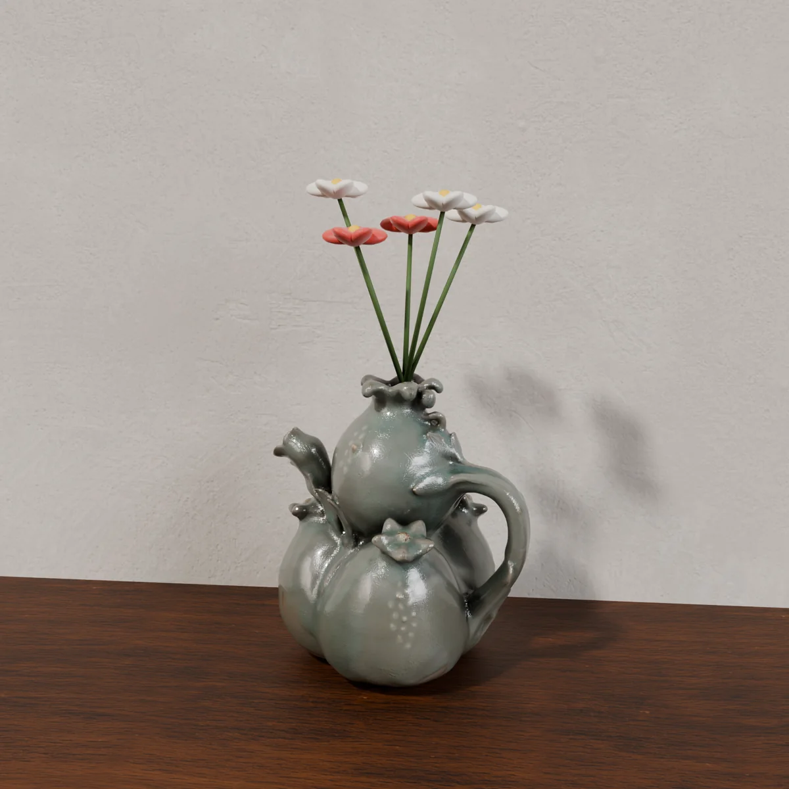
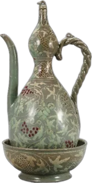


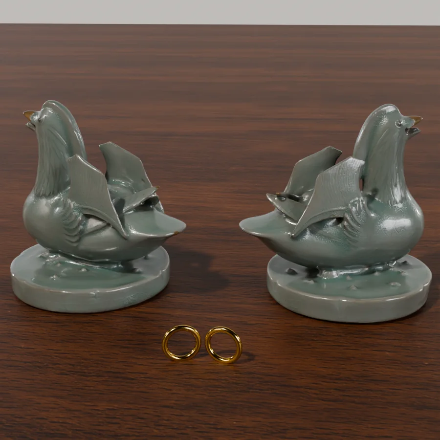
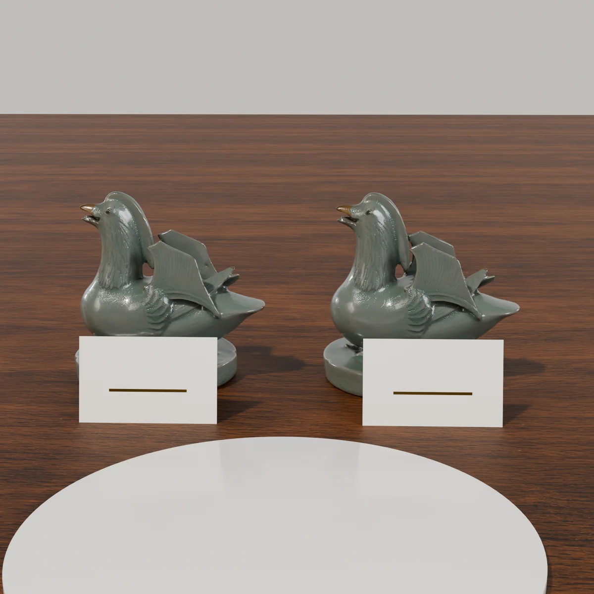

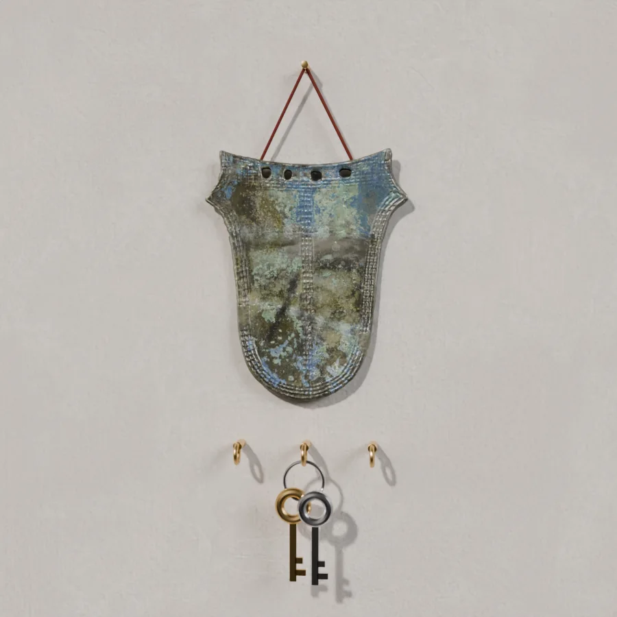
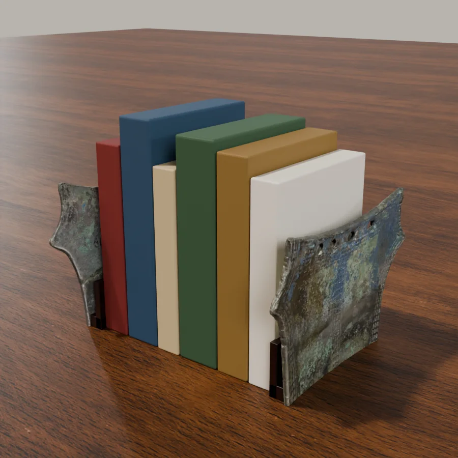
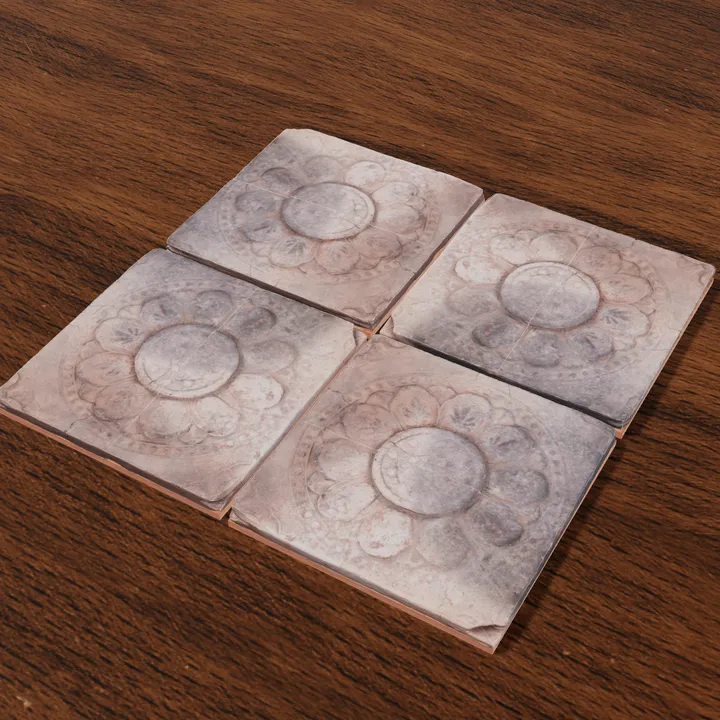
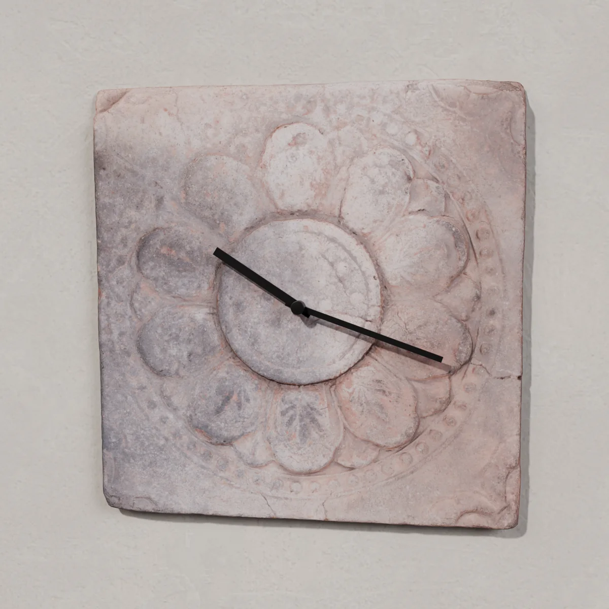
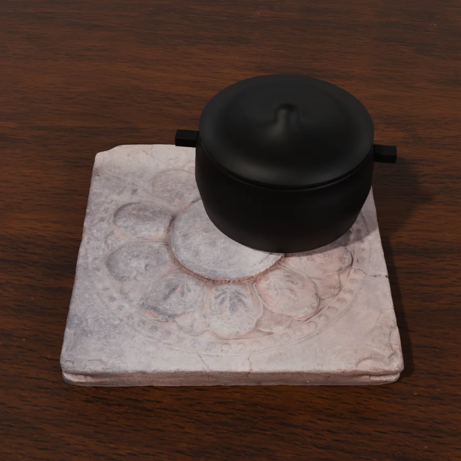


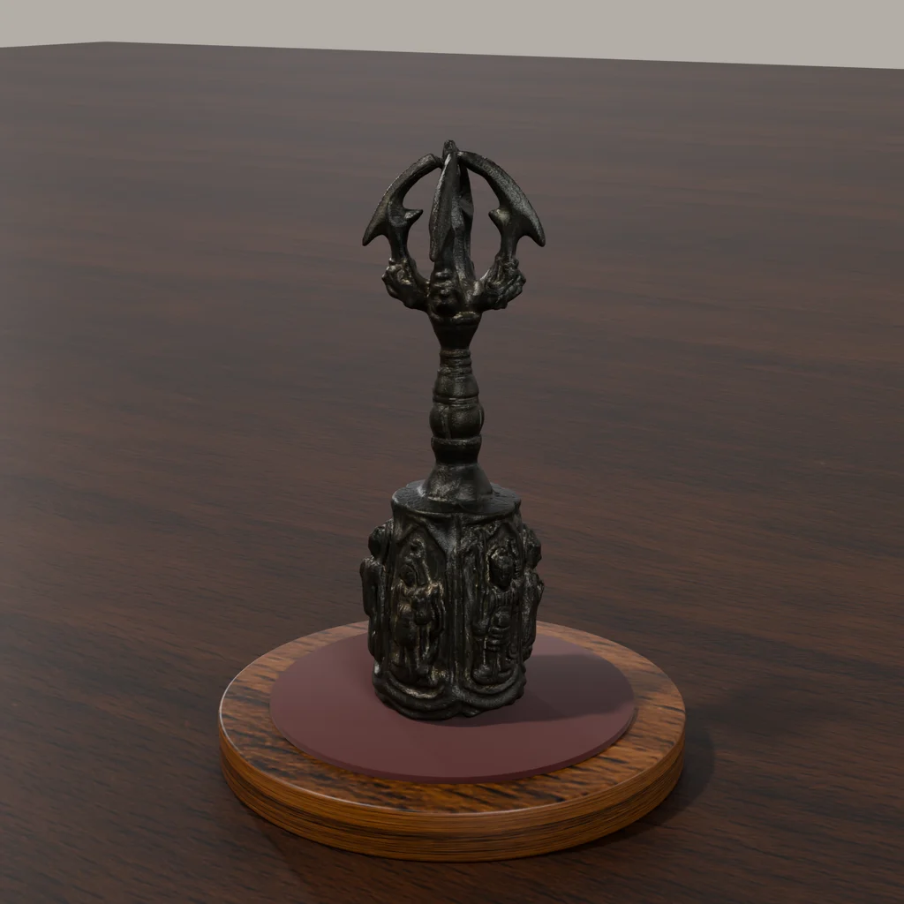
불상처럼 지금도 모시는 유물, 뼈를 담던 그릇일 수 있는 유물은 3D 스캔이 있어도 물건으로 바꾸지 않았습니다. 보물은 실물 복제에 박물관 허가가 따로 필요합니다.


여섯 판 모두 실제 전통의 순서와 원리를 그대로 옮긴 놀이예요.
지어낸 이야기 없이, 박물관 설명·전통문양 사전에서 가져온 뜻이에요.
원래 쓰임을 이어받아, 박물관 밖 일상에서 다시 쓰여요.
만든 사람 — 사물놀이·풍물을 전공하고 인천에서 10년 넘게 국악연구소를 운영하며 아이들에게 국악과 전래놀이를 가르쳤습니다. 2015년 전래놀이 교육 교재를 직접 써서 강사들을 교육했습니다.
설치 없이 브라우저에서 · 한국어 · English · 中文 · 日本語